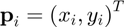
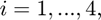
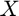
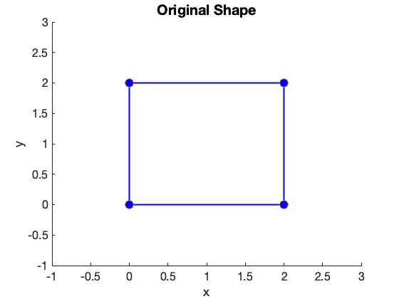
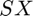
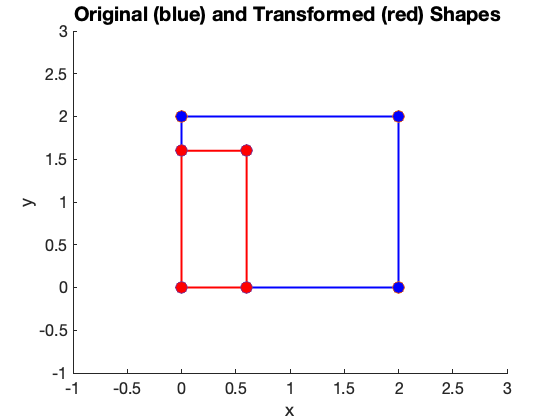
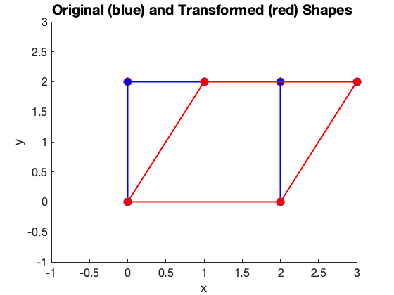
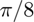
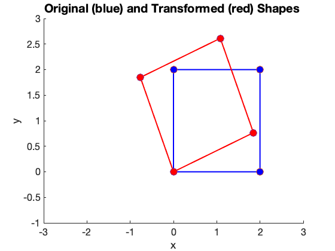

2-D Transformations
Contents
This tutorial is about 2-D transformations.
clear all; close all;
The shape to be transformed
Let's begin by defining the shape of a rectangle. The rectangular shape can be described by four 2-D points, i.e., , for . Their coordinates can be stored into a single matrix,  as follows: \begin{align} X = \begin{bmatrix} {\bf p}_1 & {\bf p}_2 & {\bf p}_3 &{\bf p}_4 \end{bmatrix}. \end{align}
px = [0 2 2 0 0]; % x-coords py = [0 0 2 2 0]; % y-coords X = [px;py] % Matrix containing the 2-D points.
X =
0 2 2 0 0
0 0 2 2 0
Display the original shape
Note that the Matlab matrix that I use to store the points contains an additional point (5 points instead of 4 for a rectangle). This extra point at the end of the sequence makes the plot function ``close'' the shape. laternatively, we could use the command patch instead and the extra point is no longer needed.
Next, we display the original shape and the corner points using blue color lines:
figure; hold on; axis([ -1 3 -1 3 ] ); plot(X(1,:), X(2,:), 'b-', 'linewidth',2) plot(X(1,:), X(2,:), 'o', 'MarkerSize', 12, 'MarkerFaceColor','b') xlabel('x','FontSize',20); ylabel('y','FontSize',20); set(gca, 'fontsize',16); set(gcf, 'color', 'w' ); title( 'Original Shape', 'FontSize',20 ); hold off;
Scaling transformation
The scaling (non-uniform) transformation is given by the following matrix: \begin{align} S = \begin{bmatrix} s_x & 0 \\ 0 & s_y \end{bmatrix}. \end{align} An numerical example of a scaling transformation is given by: \begin{align} S = \begin{bmatrix} .3 & 0 \\ 0 & .8 \end{bmatrix}. \end{align}
S = [ 0.3 0.0; ...
0.0 0.8 ];
To transform the rectangle shape, we multiply the transformation matrix by the matrix containing the points of our shape, i.e.: \begin{align} X^\prime = S\,X. \end{align}
% Apply transformation to shape
X_t = S * X;
The common notation for transformation would be to multiply the transformation matrix and a single point, i.e.: \begin{align} {\bf p}^\prime = S\,{\bf p}. \end{align}
Since matlab allows for direct matrix transformations, we can use matrix to represent the whole shape so the multiplication  transforms all points at once. The figure below shows the transformed shape superimposed on the same plot as the original shape.
% Display original points (again) figure; hold on; axis([ -1 3 -1 3 ] ); plot(X(1,:), X(2,:), 'b-', 'linewidth',2) plot(X(1,:), X(2,:), 'o', 'MarkerSize', 12, 'MarkerFaceColor','b') xlabel('x','FontSize',20); ylabel('y','FontSize',20); set(gca, 'fontsize',16); set(gcf, 'color', 'w' ); title( 'Original (blue) and Transformed (red) Shapes ', 'FontSize',20 ); % Show the transformed points plot(X_t(1,:), X_t(2,:), 'r-', 'linewidth',2) plot(X_t(1,:), X_t(2,:), 'o', 'MarkerSize', 12, 'MarkerFaceColor','r')
Rotation, Shear
Let's now consider the rotation and shear transformations. The matrix of the shear transformation is: \begin{align} G = \begin{bmatrix} 1 & a \\ 0 & 1 \end{bmatrix}, \end{align} and the rotation matrix is given by: \begin{align} R = \begin{bmatrix} \sin\theta & -\cos\theta \\ \cos\theta & \sin\theta \end{bmatrix}. \end{align}
Shear by .5 is: \begin{align} G = \begin{bmatrix} 1 & .5 \\ 0 & 1 \end{bmatrix}, \end{align}
% Shear G = [ 1.0 0.5; ... 0.0 1.0 ]; X2 = G * X; % Display original points (again) figure; hold on; axis([ -1 3 -1 3 ] ); plot(X(1,:), X(2,:), 'b-', 'linewidth',2) plot(X(1,:), X(2,:), 'o', 'MarkerSize', 12, 'MarkerFaceColor','b') xlabel('x','FontSize',20); ylabel('y','FontSize',20); set(gca, 'fontsize',16); set(gcf, 'color', 'w' ); title( 'Original (blue) and Transformed (red) Shapes ', 'FontSize',20 ); % Show the transformed points plot(X2(1,:), X2(2,:), 'r-', 'linewidth',2) plot(X2(1,:), X2(2,:), 'o', 'MarkerSize', 12, 'MarkerFaceColor','r')
and a rotation of  is given by: \begin{align} R = \begin{bmatrix} \sin\frac{\pi}{8} & -\cos\frac{\pi}{8} \\ \cos\frac{\pi}{8} & \sin\frac{\pi}{8} \end{bmatrix}. \end{align}
% Rotation th = pi/8; R = [ cos(th) -sin(th); ... sin(th) cos(th) ]; X3 = R * X; % Display original points (again) figure; hold on; axis([ -3 3 -1 3 ] ); plot(X(1,:), X(2,:), 'b-', 'linewidth',2) plot(X(1,:), X(2,:), 'o', 'MarkerSize', 12, 'MarkerFaceColor','b') xlabel('x','FontSize',20); ylabel('y','FontSize',20); set(gca, 'fontsize',16); set(gcf, 'color', 'w' ); title( 'Original (blue) and Transformed (red) Shapes ', 'FontSize',20 ); % Show the transformed points plot(X3(1,:), X3(2,:), 'r-', 'linewidth',2) plot(X3(1,:), X3(2,:), 'o', 'MarkerSize', 12, 'MarkerFaceColor','r')